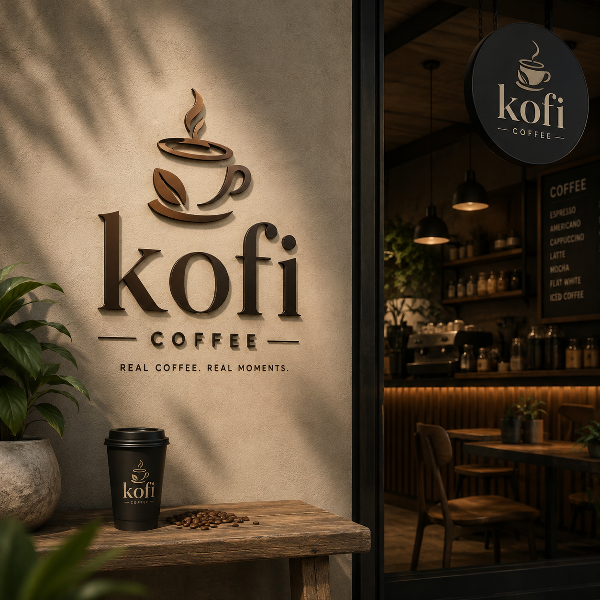

Quality
We take care when preparing our drinks and food so customers receive a satisfying experience.
Fresh coffee, brewed with love.
Welcome to Kofi, a local coffee shop where freshly prepared coffee, tasty food and friendly service come together.
Kofi was created to provide a welcoming place where customers can enjoy a quality drink, meet friends, study, work or take a break from a busy day.

Kofi started with a simple goal: to make good coffee accessible while creating a warm and friendly local experience.
We focus on carefully prepared drinks, fresh snacks and respectful customer service. Our menu includes hot drinks, cold drinks and snacks so that customers have a variety of choices.
We want Kofi to be more than a place to buy coffee. We want it to be a comfortable community space where people can spend time together.
We take care when preparing our drinks and food so customers receive a satisfying experience.
We aim to treat every customer with friendliness, respect and helpful service.
We provide a welcoming local space where people can meet, relax, study and connect.
We focus on freshly prepared coffee and snacks to improve the customer experience.
123 Main Street, Polokwane, Limpopo
Phone: 012 345 6789
Email: hello@kofi.co.za
Opening Hours: Monday - Saturday, 7:00 AM - 6:00 PM